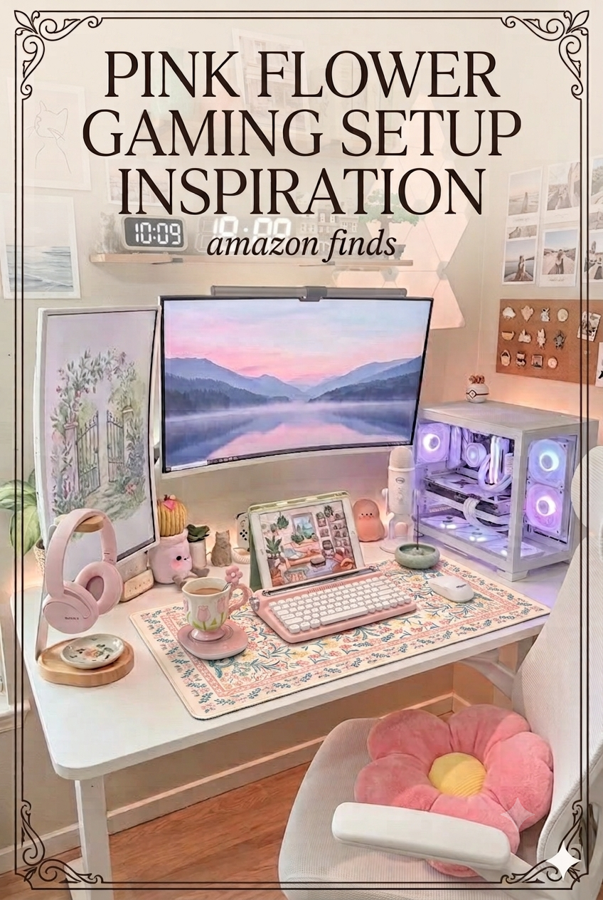
Soft pink, scattered petals, that cottagecore-meets-gaming energy that just makes you want to sit down and play. This setup is built around a gorgeous floral desk mat and a baby pink typewriter keyboard — then filled in with Sony headphones in blush, a flower-shaped pillow, a smart coffee warmer, and a clean white monitor that lets the pink do all the talking. Every single piece is on Amazon.
As an Amazon Associate we earn from qualifying purchases — at no extra cost to you.
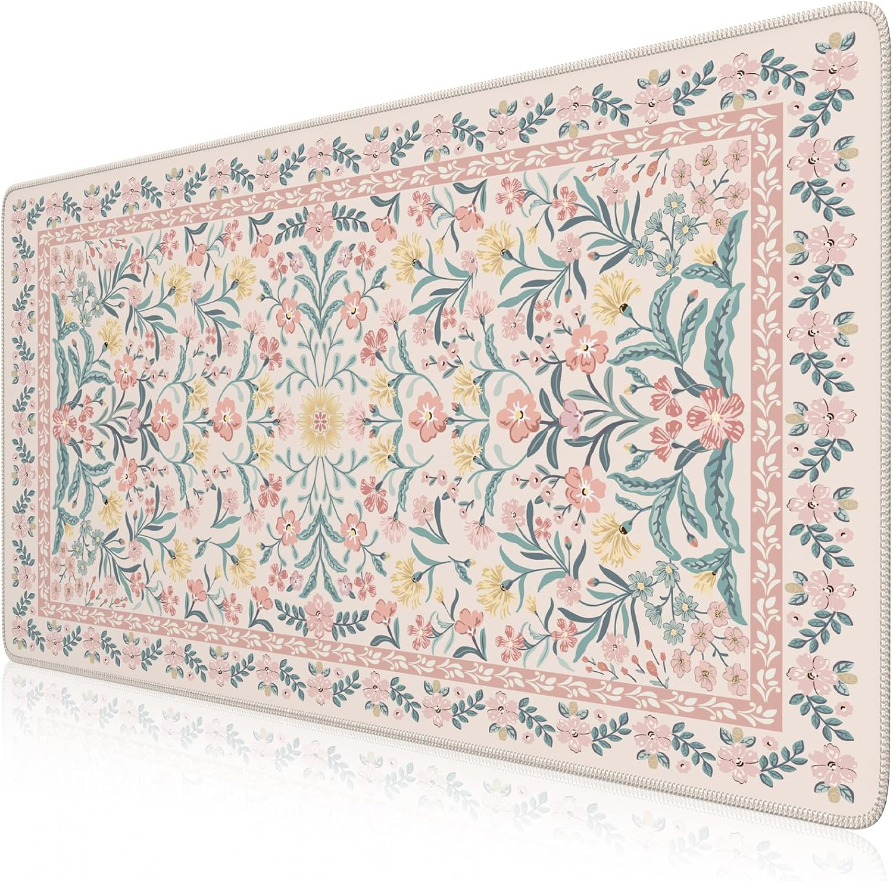
The anchor of the whole setup. This extended desk mat is covered in a vintage botanical print — soft pink blossoms, sage leaves, the kind of pattern you'd find on antique wallpaper. It's big enough to cover your full desk, stitched edges so it won't fray, and the thick base keeps it in place all day.
Shop on Amazon →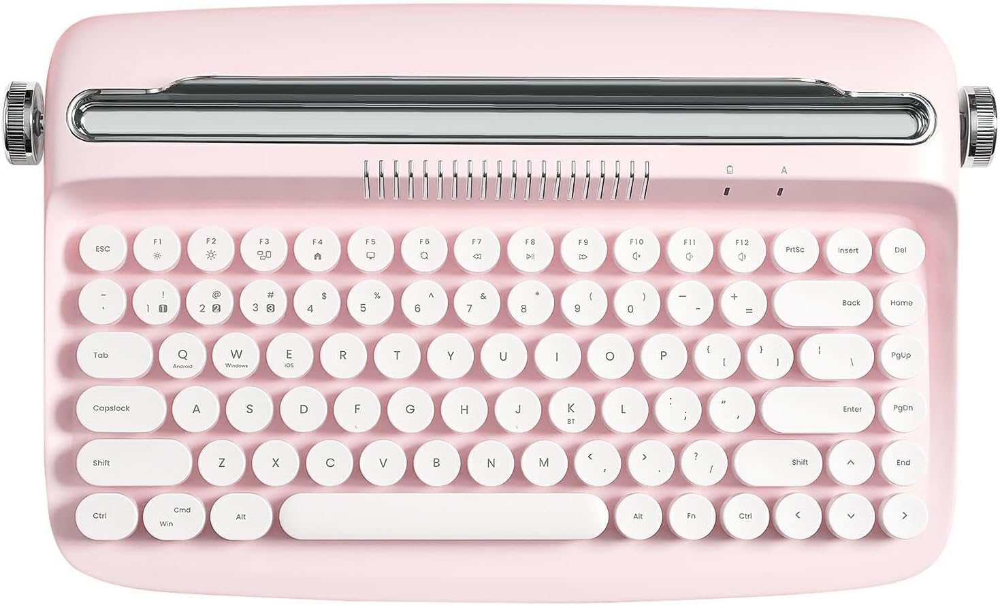
The most talked-about keyboard in the aesthetic gaming space right now. Round white keys on a blush pink body, a retro carriage bar across the top, and wireless Bluetooth so you can pair it to your phone, tablet, or PC without any cable mess. It types beautifully and looks like it belongs in a movie set.
Shop on Amazon →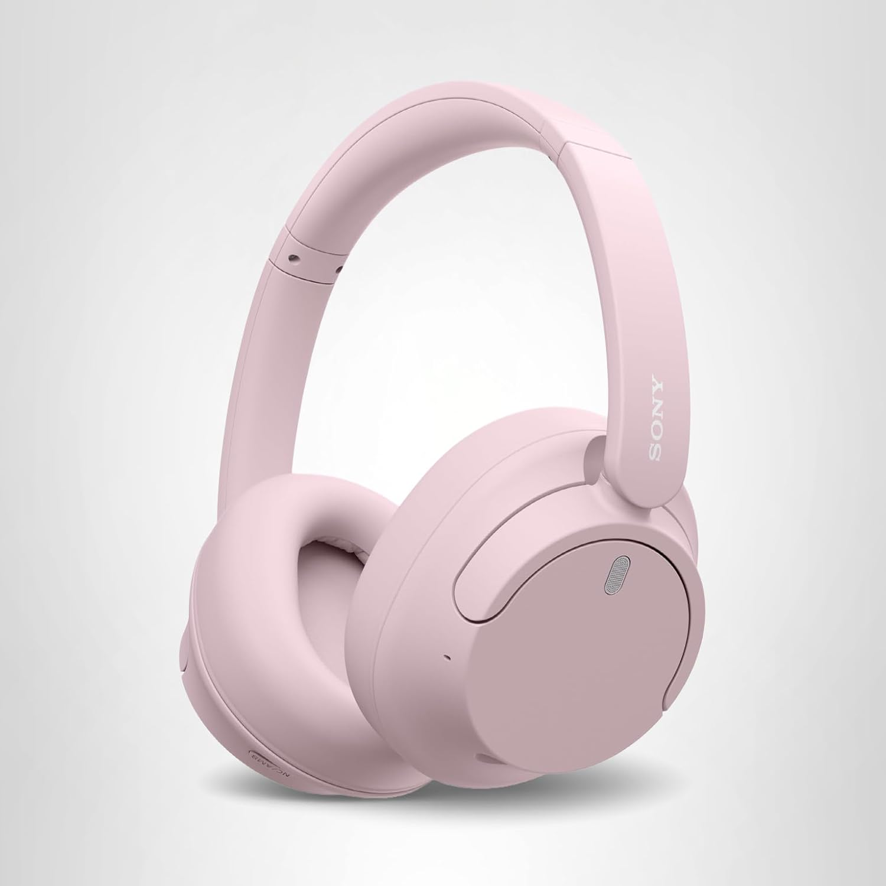
Sony's noise-cancelling headphones in the softest blush pink. Feather-light (only 192g), up to 35 hours of battery, multipoint Bluetooth so you can switch between devices seamlessly. The sound quality is proper Sony — wide, clear, with a warm low end. And they look genuinely stunning on a headphone stand.
Shop on Amazon →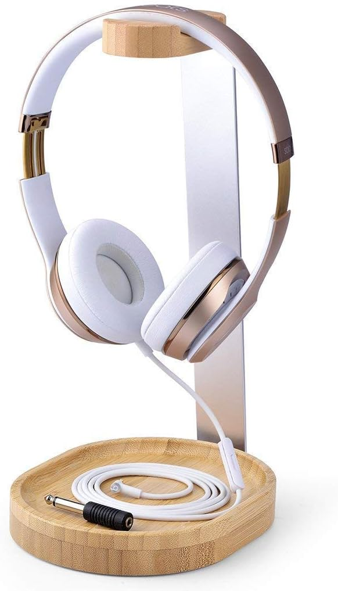
Natural wood meets brushed aluminium in the most elegant little stand. It adds a warm, organic texture to the desk that balances the softness of the pink without fighting it. Weighted base so it won't topple, and the curved arm fits any size of headphones. Understated and beautiful.
Shop on Amazon →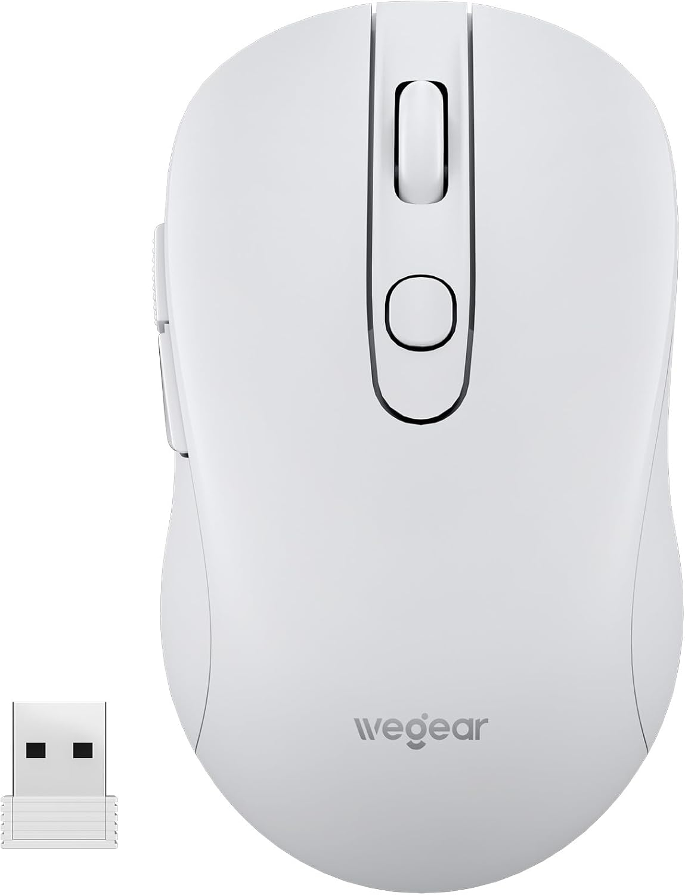
Clean white, whisper-quiet clicks, slim silhouette. This mouse disappears into the setup — which is exactly what you want when the keyboard is already making a statement. Wireless, long battery life, and silent enough that you could use it in a library. Comfortable for hours of use without the wrist fatigue.
Shop on Amazon →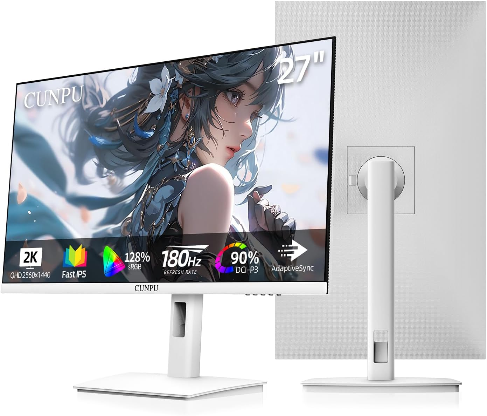
A 27-inch Fast IPS panel in clean white, which is genuinely rare. 2K QHD resolution (2560×1440) with a 180Hz refresh rate — it's as capable as monitors twice the price. The white stand and white bezel keep the aesthetic perfectly intact without making any compromises on performance. This one earns its place in a pink setup.
Shop on Amazon →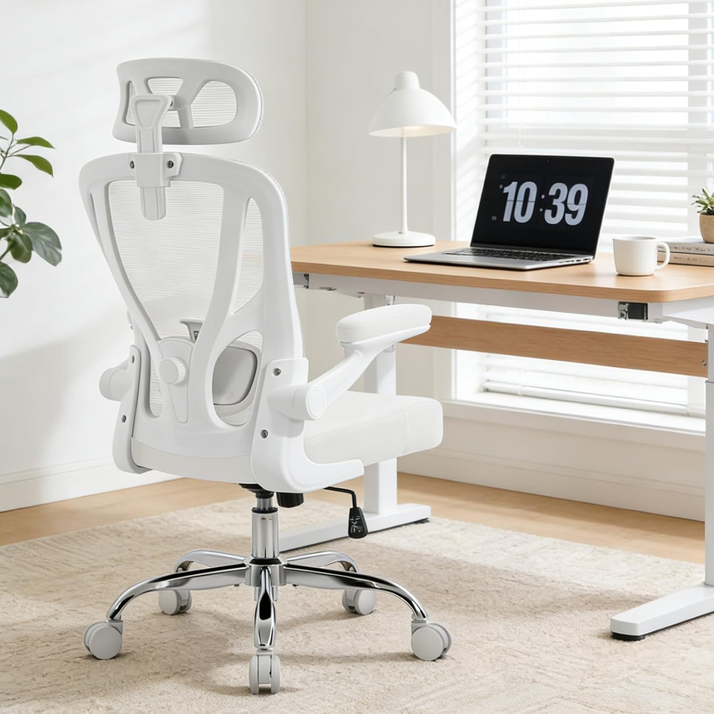
All-white mesh chair that's actually comfortable for long sessions — adjustable lumbar, headrest, and flip-up armrests so you can tuck it neatly under the desk. The chrome base gives it a slightly elevated look. If you want the setup to feel cohesive from floor to ceiling, this is the chair that does it.
Shop on Amazon →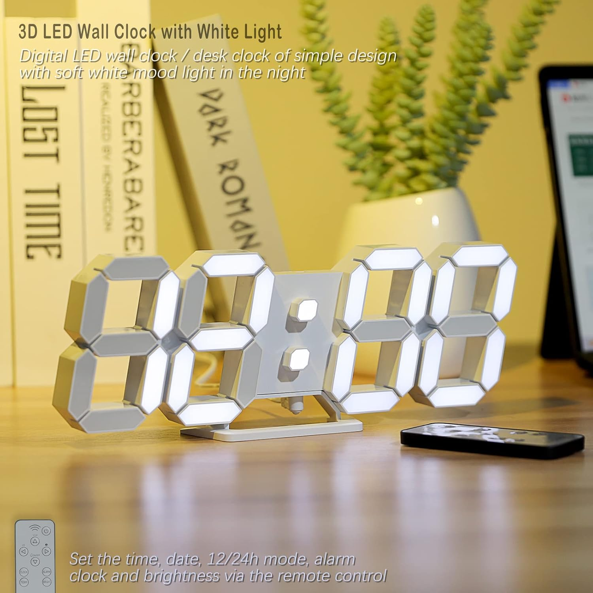
A sculptural LED clock that glows softly in white — it works as both a desk clock and a mood light once the sun goes down. The 3D digits have that editorial, art-object quality that makes it feel intentional rather than functional. Remote control for brightness and alarm settings. A quiet little statement piece.
Shop on Amazon →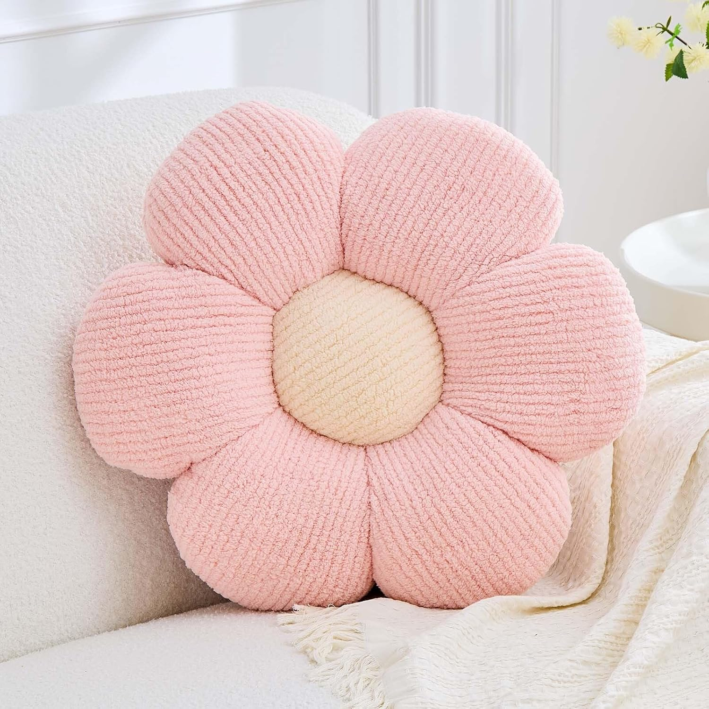
A big, fluffy daisy cushion in the softest blush pink — the kind of thing that makes the whole room feel warmer just by existing in it. Pop it on your gaming chair or prop it in the corner behind your desk. It's the finishing touch that takes "pink setup" to "actual vibe." And it's the most Pinterestable thing in this entire guide.
Shop on Amazon →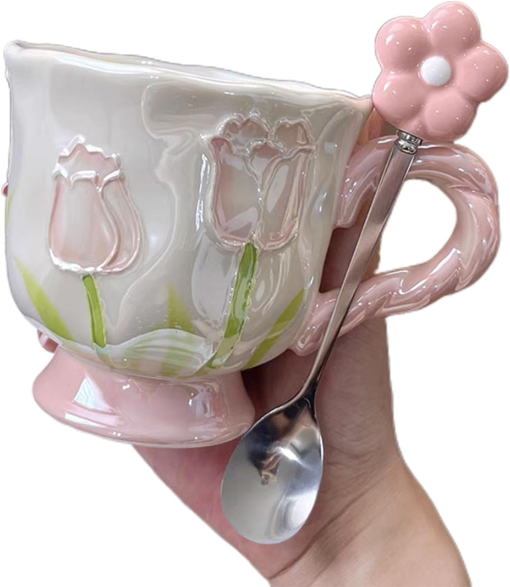
A handcrafted-looking ceramic mug shaped like a tulip bloom. Dishwasher safe, the right size for a proper morning coffee, and so visually charming that you'll find reasons to leave it out on the desk all day. Pairs beautifully with the coffee warmer below — and yes, that pairing is intentional.
Shop on Amazon →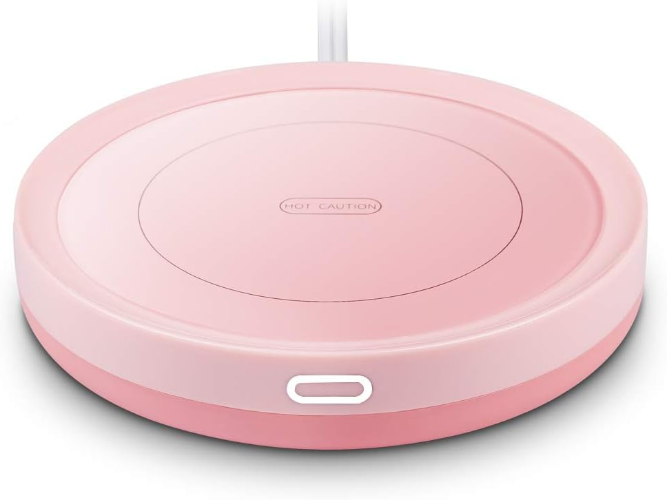
The desk accessory you didn't know you needed until you've had cold coffee one too many times mid-session. This one's pink (obviously), keeps your mug at the perfect temperature, and has an auto shut-off so you can forget about it. Set the tulip mug on top and you have an instantly cozy little corner of the desk.
Shop on Amazon →Start with the floral desk mat and the typewriter keyboard — those two pieces set the entire tone. Add the Sony headphones on the wooden stand, keep the mouse and chair white so the pink doesn't overwhelm, and finish with the flower pillow and the mug-warmer duo. That's the whole formula. Soft, considered, and completely shoppable from Amazon.
Start with the floral desk mat →